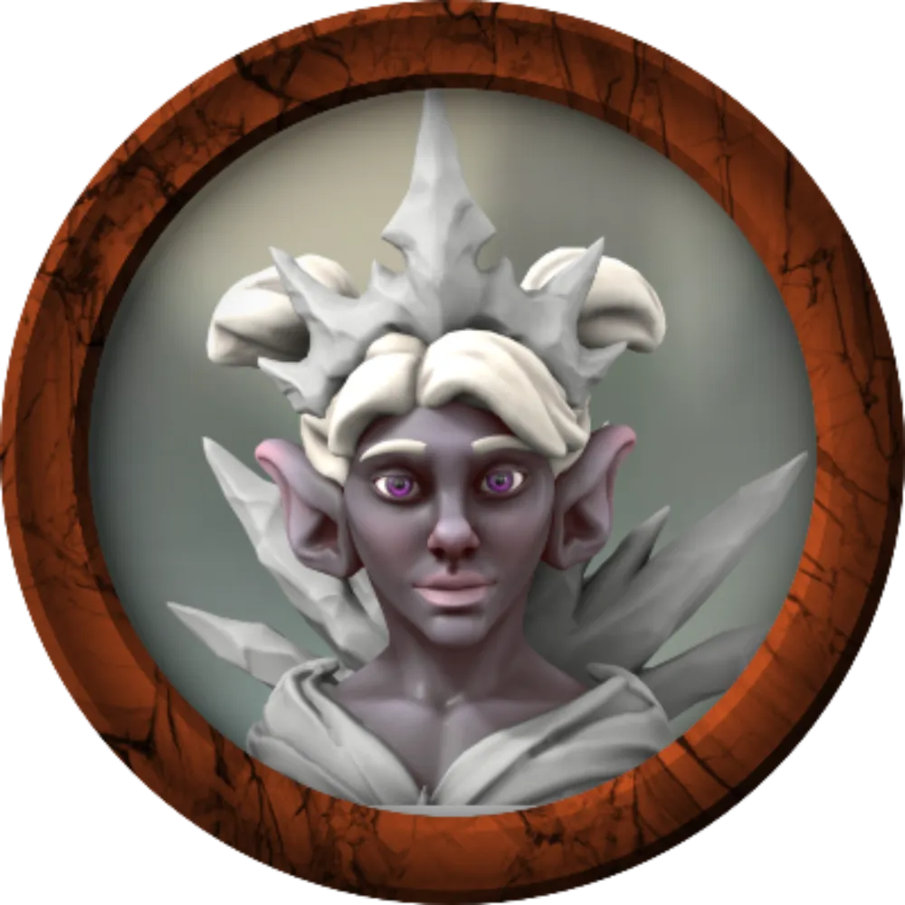

Gracklstugh (pronuncia-se GRACS-TUG), é uma cidade duergar às margens do Lago Negro, na Underdark.
A cidade fica a cerca de 243km de Menzoberranzan, do outro lado do Lago
Negro.
O acesso a Gracklstugh pode ser alcançado pelo Lago Negro.
Gracklstugh is uma cidade caverna anexada do Lago negro como um porto subterrâneo. A cidade é iluminada pela luz do fogo de fundições misturadas entre estalagmites. O ar cheira acre e é carregado de sons industriais: fogo, vapor e ferro zumbindo. A fumaça persistente que preenche a caverna pode causar uma tosse persistente, e às vezes fatal, conhecida como Pulmão de Grackle.
A cidade é principalmente lar de duergars, mas há uma minoria considerável
de derros que vivem lá, assim como vários durzagon, orogs e gigantes de pedra. Um terço da população total é
composto por escravos, nomeadamente goblins, anões do escudo, orcs, svirfneblin e humanos.
A cidade recebia muitos mercadores visitantes, especialmente drow, duergar e kuo-toa. Estrangeiros são
obrigados a obter mandados de passagem para atravessar a cidade (além do distrito dos cais) and seus
territórios. Um forasteiro que adentre Gracklstugh, só consegue sair pacificamente se alguém o conceder
permissão oficial.
Grupos só tem permissão para sair caso fundem uma guilda oficialmente.

Duergar mercadora que trazia alguns itens especiais para Gracklstugh.

Derro mensageiro excêntrico, está sendo investigado por Errde Crânio Negro. É frequentemente visto correndo em velocidade alarmante pela cidade enquanto murmura algo para si mesmo em tom de reprovação.

Capitã Errde Crânio Negro, comandante da Guarda de Pedra. Trata Vaal com respeito ímpar, enquanto subestima Atena e vê os demais como possíveis escravos valorosos. Recentemente, Errde Crânio Negro tem achado que uma CONSPIRAÇÃO SECRETA está se instaurando na Cidade das Lâminas.

Duergar líder dos Guardiões da Chama, conselheiro direto de Themberchaud e irmão de Gorglak.

Faz parte dos Guargas de Pedra, a milícia de menor patente em Gracklstugh. É um duergar guardião da chama, irmão de Gartokkar, com corrupção exarcebada.

O líder dos gigantes de pedra é um sacerdote de Skoraeus Ossos de Pedra, o deus de seu povo. Hgraam é sábio e bem informado, além de demonstrar grande gratidão pela ajuda que os aventureiros deram a ele quando teve de lidar com um gigante bicéfalo enlouquecido. Envergonhado pelo ocorrido, convidou os aventureiros a uma reunião.

Um governante impiedoso e astuto. Existem diversas especulações a respeito de suas ações, mas ninguém sabe com precisão.

Este dragão vermelho adulto mantém as fundidoras e forjas da cidade acesas, recebendo tesouros, refeições e constantes regalias em troca.

Mercador Duergar, patriarca líder do clã Barão de Sal.

Uma duergar membro do Conselho Mercantil. Ela é uma mestra de caravana hábil e orgulha-se de sempre chegar ao seu destino antes do combinado.
A seguir, missões designadas ao grupo.